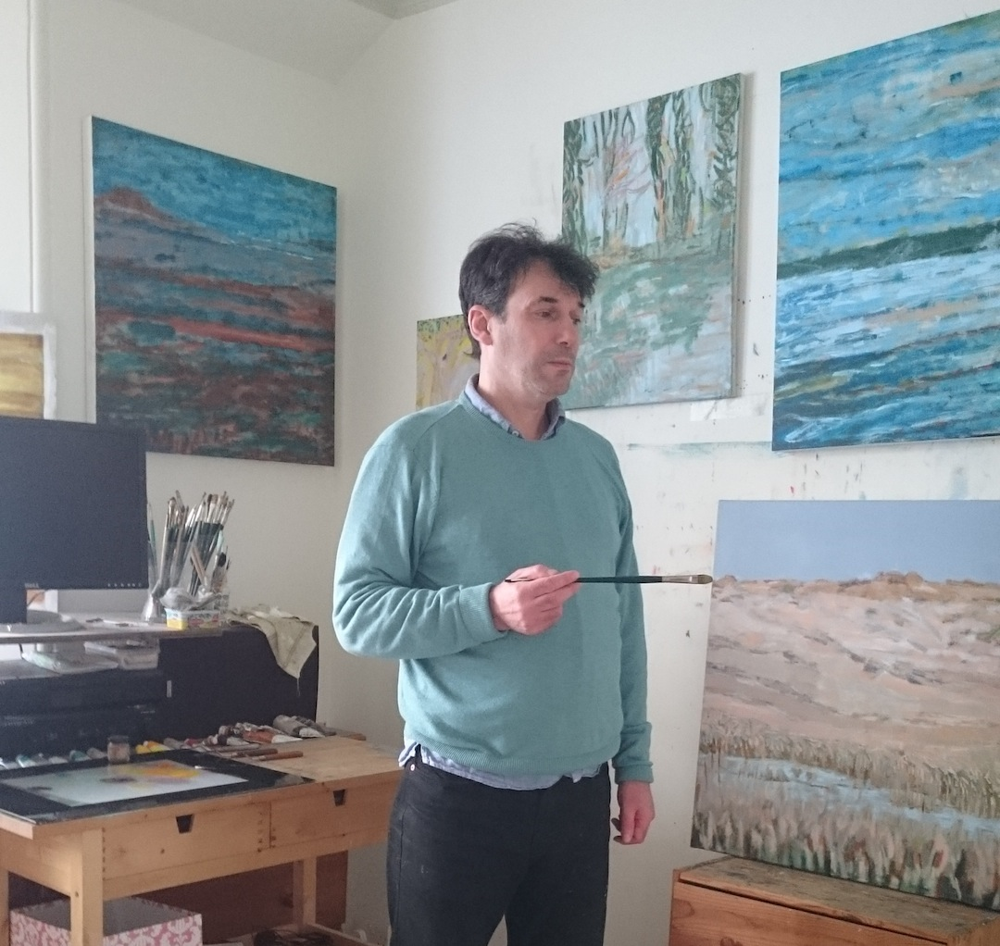
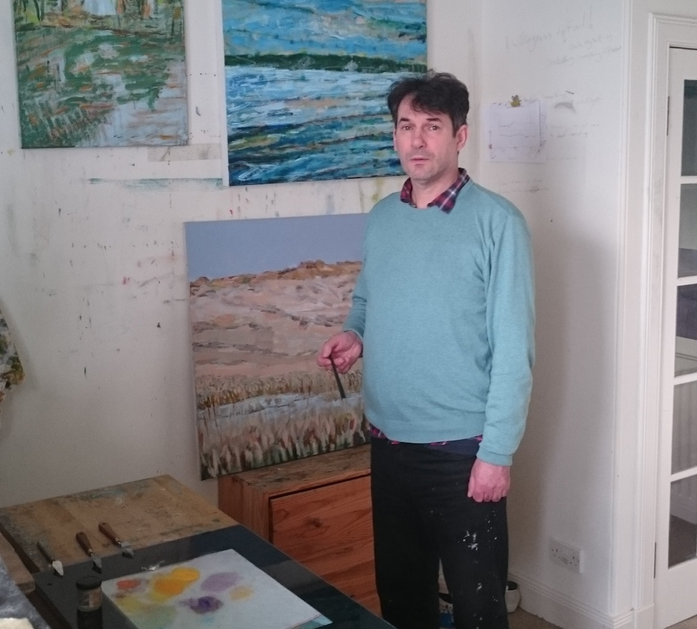

     <!-- Intro Section -->
    <section id="intro" class="intro-section" style="padding-top:85px;">
        <div class="jumbotron" style = "padding-top: 10px; padding-bottom: 10px; background-color: transparent">


            <div class="container">
                <div class="row">
                    <div class="col-xs-14 col-sm-14 col-md-5 padding">
                            <h1 >Contemporary Scottish Landscape Paintings</h1>
                    </div>
                    <div class="col-xs-14 col-sm-14 col-md-7 padding">
                            


            <!-- <div class="container">
               <h1 style="margin-top:10px; margin-bottom:0px; font-size: 300%;font-weight: 300;">Contemporary Scottish Landscape Paintings</h1>
            </div>
             </div>
        <div class="container">
            <div class="row">
                    
        </div>
            </div> -->
    </section>


    <section id="about" class="about-section">
        <h2 style="font-weight: 200;">About the Artist</h2>
        <div class="container">
            <div class="row">
                <div class="col-xs-6">
                    
                </div>
                <div class="col-xs-6" style="padding-top:85px;">
                    <p class="lead" style="font-weight: 200;">For my tenth birthday I received a box of watercolours and I've been painting ever since. These days my work is mostly done in oils on linen but I also use acrylics and watercolours for studies.
                        For me painting is all about exploring the elemental oneness of light and colour that manifests in the shapes and forms that surround us.
                         I tend to paint in series; inspired by the moors, rivers, and estuaries that I visit in Fife and the Cotswolds. </p>
                </div>
                 </div>
             </div>
    </section>
